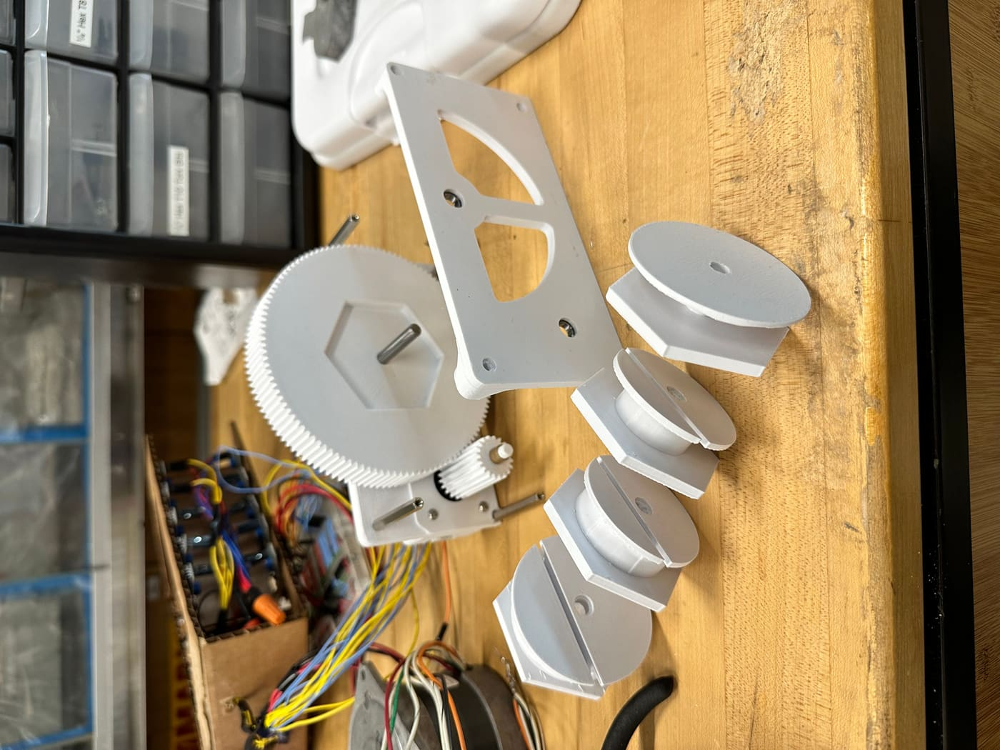
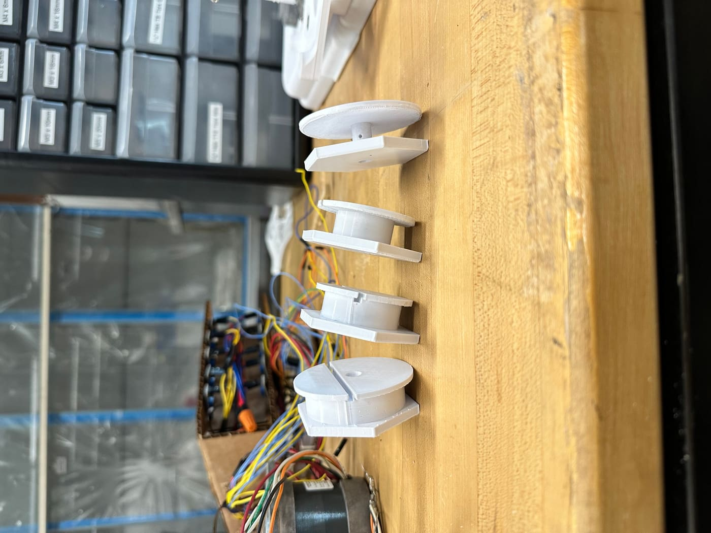
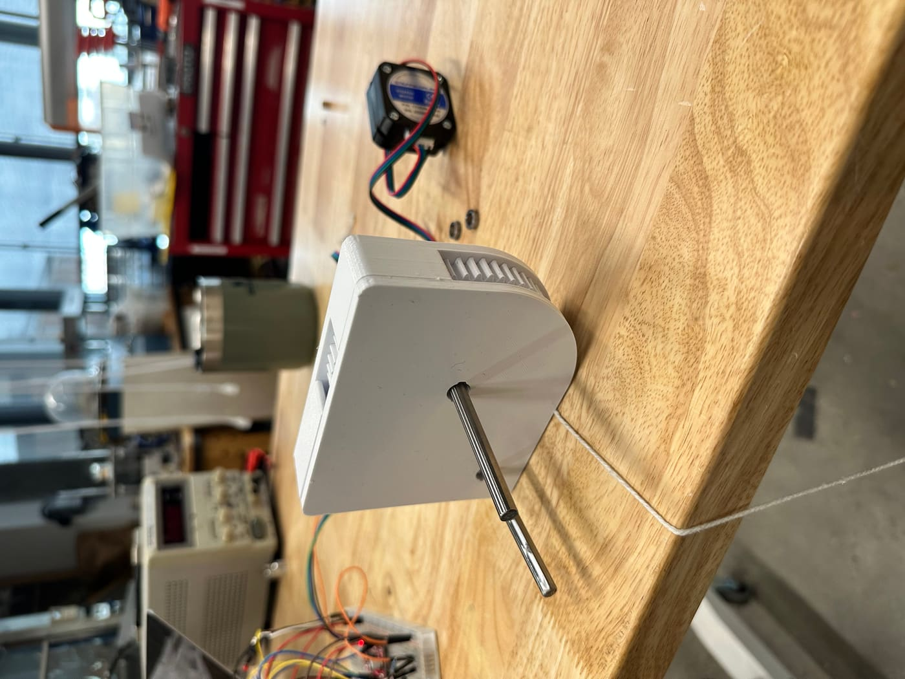
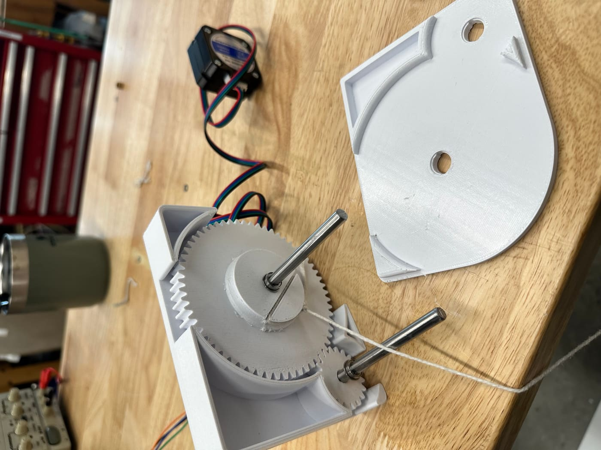
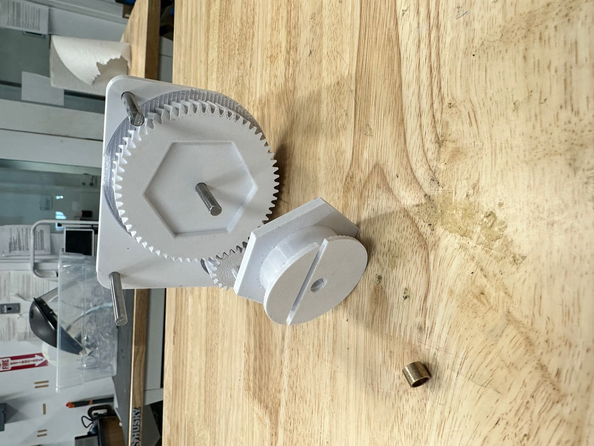
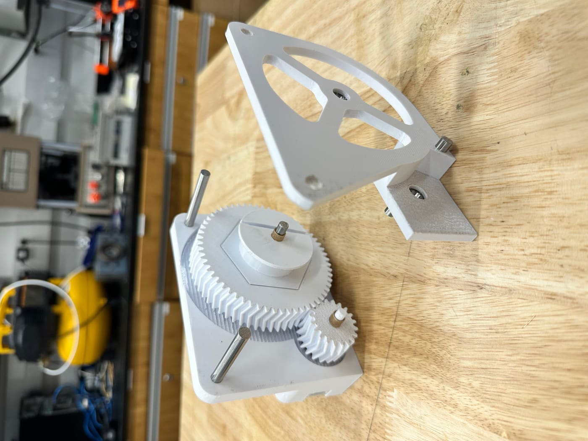

Gear Train Race
Designed and fabricated a high-efficiency gear train for a competition to rapidly lift a 10-pound weight. This project involved precise calculations and innovative problem-solving, resulting in a sleek, modular design.
Final Product


The final design features a modular system with easy-to-replace components. The interchangeable gears allow for on-the-fly adjustments to the gear train's moment arm, directly affecting velocity and torque to meet competition requirements. The result is a sleek, modern, and highly functional gear train.
CAD Design & Assembly
All design work was completed using OnShape, a powerful cloud-based virtual design software. The CAD process was essential for simulating mechanical interactions, validating part tolerances, and planning the assembly sequence before fabrication.
Design & Fabrication Process
Iteration #1


- The initial design was aesthetically pleasing but suffered from significant fabrication issues.
- 3D printing imperfections resulted in measurement errors, creating unnecessary friction between gears.
- The press-fit lid and base lacked sufficient strength and stability.
- Not enough free space was left for the gears to turn freely.
Iteration #2


- A modular design was implemented, allowing the moment arm to be easily replaced.
- The support method was changed from 3D-printed parts to more robust metal shafts.
- However, the unusual shape of the lid created inaccuracies in the 3D print, which affected gear alignment and functionality.
Iteration #3 (Final)
The final iteration built upon the successes and lessons learned from the previous versions, resulting in a refined and highly functional product. The final design features:
- A truly modular design with components that are easy to replace.
- Interchangeable gears to quickly adjust the moment arm, impacting velocity and torque.
- An optimized shape that is both sleek and modern, while ensuring accurate 3D printing and precise gear alignment.
- A design that achieves optimal velocity and torque for the competition's specific requirements.